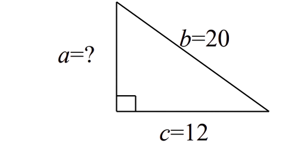
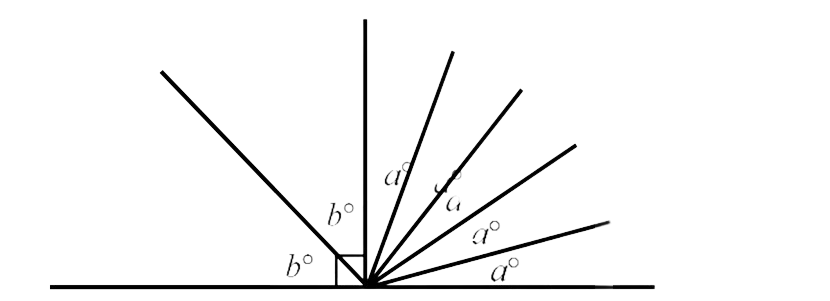
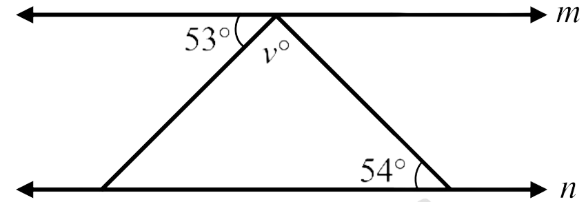

60:00
| What is the result of \( 0.84 + 2.2 + 56.007 \) ? | ما ناتج \( 0.84 + 2.2 + 56.007 \) ؟ |
| A | \( 59.111 \) | A |
| B | \( 58.047 \) | B |
| C | \( 59.047 \) | C |
| D | \( 58.807 \) | D |
| Find the average of the following five numbers : \( 96,\, 82,\, 90,\, 82,\, 85 \) | احسب متوسط الأعداد التالية : \( 96,\, 82,\, 90,\, 82,\, 85 \) |
| A | \( 85 \) | A |
| B | \( 82 \) | B |
| C | \( 87 \) | C |
| D | \( 90 \) | D |
| Solve the equation \( \log_{2}(5x - 1) = 2 \) for the set of real numbers. | ما حل المعادلة \( \log_{2}(5x - 1) = 2 \) ضمن مجموعة الأعداد الحقيقية ؟ |
| A | \( x = 1 \) | A |
| B | \( x = 2 \) | B |
| C | \( x = 4 \) | C |
| D | \( x = 3 \) | D |
| \(7 \dfrac{1}{2} \div 5 \dfrac{5}{9} = ?\) | ما ناتج العملية التالية: \( 7 \dfrac{1}{2} \div 5 \dfrac{5}{9} \) ؟ |
| A | \( \dfrac{100}{135} \) | A |
| B | \( 1 \dfrac{7}{20} \) | B |
| C | \( \dfrac{20}{27} \) | C |
| D | \( 41 \dfrac{2}{3} \) | D |
| A car travels \(438.4\) miles on a full tank of fuel. How far (in miles) does the car travel with one gallon of fuel if the tank capacity is \(16\) gallons? | تقطع سيارة مسافة \(438.4\) ميلاً عندما يكون خزان الوقود ممتلئًا تمامًا. ما المسافة (بالميل) التي تقطعها السيارة بمقدار جالون واحد من الوقود إذا كانت سعة الخزان \(16\) جالونًا؟ |
| A | \(701.44\) | A |
| B | \(27.4\) | B |
| C | \(74.2\) | C |
| D | \(7014.4\) | D |
| Convert \( 55^\circ C \) from Celsius to Fahrenheit using the formula \( F = \frac{9}{5}(C + 32) \) | حوِّل \( 55^\circ C \) من مقياس سيلزيوس إلى فهرنهايت باستخدام العلاقة \( F = \frac{9}{5}(C + 32) \) |
| A | \( 131^\circ F \) | A |
| B | \( 387^\circ F \) | B |
| C | \( 105.4^\circ F \) | C |
| D | \(156.6^\circ F \) | D |
| Find \(a\) in the triangle below. (Note: Figure is not drawn to scale.) |
ما قيمة \(a\) في المثلث الموضح أدناه؟ (ملاحظة: الشكل غير مطابق لمقياس الرسم) |

| A | \(12\) | A |
| B | \(8\) | B |
| C | \(16\) | C |
| D | \(14\) | D |
| What is the volume of a cylinder whose radius is \(5\,cm\) and height is \(4\,cm\) to the nearest integer? (consider that \(\pi=3.14\)) | ما حجم الأسطوانة التي نصف قطرها \(5\,cm\) وارتفاعها \(4\,cm\) لأقرب عدد صحيح باعتبار أن \(\pi=3.14\) |
| A | \(314\, cm³\) | A |
| B | \(63\, cm³\) | B |
| C | \(126\, cm³\) | C |
| D | \(1256\, cm³\) | D |
|
Evaluate \( (b + 2a)^2 + \frac{c^2 - 6b}{d} \) where \(a=2\) \(b=3\) \(c=12\) \(d=6\) |
ما قيمة \( (b + 2a)^2 + \frac{c^2 - 6b}{d} \) عندما \(a=2\) \(b=3\) \(c=12\) \(d=6\) |
| A | \(46\) | A |
| B | \(15\) | B |
| C | \(70\) | C |
| D | \(29 \dfrac{1}{6}\) | D |
| Solve the equation \( \frac{2x - 3}{4} = \frac{5}{6} \). | ما حل المعادلة \( \frac{2x - 3}{4} = \frac{5}{6} \) ؟ |
| A | \(1 \dfrac{3}{6}\) | A |
| B | \(\dfrac{1}{6}\) | B |
| C | \(18\) | C |
| D | \(3 \dfrac{1}{2}\) | D |
| Find the slope of a line that passes through the points \((-5, 2)\) and \((1, -4)\). | ما ميل الخط المستقيم الذي يمر بالنقطتين \((-5, 2)\) و \((1, -4)\)؟ |
| A | \(-\dfrac{1}{3}\) | A |
| B | \(1\) | B |
| C | \(\dfrac{1}{2}\) | C |
| D | \(-1\) | D |
| Solve the inequality \(4x - 9 < 5x + 9\). | ما حل المتباينة \(4x - 9 < 5x + 9\) ؟ |
| A | \(x > 0\) | A |
| B | \(x > -18\) | B |
| C | \(x < 18\) | C |
| D | \(x < -18\) | D |
|
What is the value of \( y \) in the system of equations
\( \begin{cases} 2x - y = 5 \\ 4x - y = 7 \end{cases} \)? |
ما قيمة \( y \) في نظام المعادلتين
\( \begin{cases} 2x - y = 5 \\ 4x - y = 7 \end{cases} \) ؟ |
| A | \(y = 3\) | A |
| B | \(y = -7\) | B |
| C | \(y = 2\) | C |
| D | \(y = 1\) | D |
| Two numbers have the sum of \(35\). One of them is \(3\) more than the other. What is the small number? | عددان مجموعهما \(35\)، ويزيد العدد الأكبر \(3\) عن العدد الأصغر. ما العدد الأصغر؟ |
| A | \(13\) | A |
| B | \(8 \dfrac{3}{4}\) | B |
| C | \(19\) | C |
| D | \(16\) | D |
| Simplify \(\bigl(-3x^2y\bigr)^2 \cdot \bigl(2xy^3\bigr)^3\). | ما تبسيط \(\bigl(-3x^2y\bigr)^2 \cdot \bigl(2xy^3\bigr)^3\) ؟ |
| A | \(72x^7y^{11}\) | A |
| B | \(-72x^7y^{11}\) | B |
| C | \(108x^7y^8\) | C |
| D | \(-108x^7y^8\) | D |
| In the figure below, what is the value of \(4a - b\)? (Note: Figure is not drawn to scale.) |
ما قيمة \(4a - b\) اعتمادًا على الشكل المرسوم أدناه؟ (ملاحظة: الشكل المرسوم لا يتطابق مع مقياس الرسم) |

| A | \(54\) | A |
| B | \(27\) | B |
| C | \(18\) | C |
| D | \(45\) | D |
| Fatima has three apples and four oranges in a box. If she picks one fruit from the box without looking, what is the probability that the fruit is an orange? | لدى فاطمة ثلاث تفاحات وأربع برتقالات في صندوق. إذا أخذت ثمرة واحدة من الصندوق دون أن تنظر داخله، ما احتمال أن تكون هذه الثمرة برتقالة؟ |
| A | \(\tfrac{1}{7}\) | A |
| B | \(\tfrac{3}{7}\) | B |
| C | \(\tfrac{1}{4}\) | C |
| D | \(\tfrac{4}{7}\) | D |
| If \(m\) and \(n\) are parallel lines, as in the following figure, what is the value of \(v\)? (Note: Figure is not drawn to scale.) |
إذا كان الخطان المستقيمان \(m\) و\(n\) في الشكل أدناه متوازيين، فما قيمة \(v\)؟ (ملاحظة: الشكل المرسوم لا يتطابق مع مقياس الرسم) |

| A | \(53\) | A |
| B | \(93\) | B |
| C | \(54\) | C |
| D | \(73\) | D |
| What are the roots of the equation \( x^2 - 11x + 30 = 0 \)? | ما جذرا المعادلة \( x^2 - 11x + 30 = 0 \) ؟ |
| A | \(5\) و \(-6\) | A |
| B | \(5\) و \(6\) | B |
| C | \(-5\) و \(6\) | C |
| D | \(-5\) و \(-6\) | D |
| What are the quotient and remainder of \( 451 \div 5 \)? | ما ناتج القسمة \( 451 \div 5 \) ؟ |
| A | الناتج \(\ 90\) والباقي \(\ 1\) | A |
| B | الناتج \(\ 9\) والباقي \(\ 1\) | B |
| C | الناتج \(\ 91\) والباقي \(\ 0\) | C |
| D | الناتج \(\ 92\) والباقي \(\ 0\) | D |